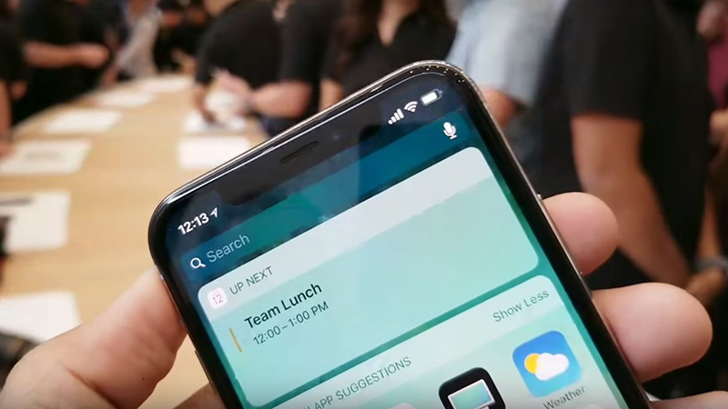

Phone X được Apple ra mắt ngày 12/9 vừa rồi đánh dấu chặng đường 10 năm lần đầu tiên iPhone ra đời. Mang trên mình thiết kế hoàn toàn mới với màn hình Super Retina viền cực mỏng và trang bị nhiều công nghệ hiện đại như nhận diện khuôn mặt Face ID, sạc pin nhanh và sạc không dây cùng khả năng chống nước bụi cao cấp nhất.
Màn hình iPhone X được phủ kín gần như toàn bộ ở mặt trước và vẫn chừa lại một phần màn hình cho loa, camera và các cảm biến ở phía trên.
Còn mặt sau vẫn là chất liệu kính nhé, tiện thể thì iPhone X cũng chuẩn chống nước IP68 luôn.